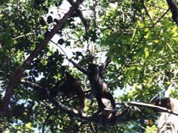
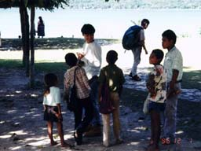
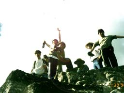
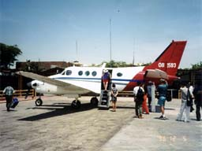
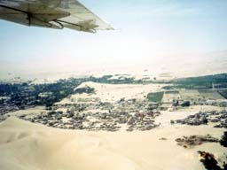
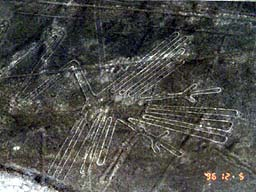

| Sonic Team Goes to South America (3) | |
|
[Sonic Team Goes to South America (2)][Sonic Team Goes to South America (4)]
On the 30th, we flew to Guatemala by plane. Our first stop was the Tikal Ruins in the jungle.
Shortly after entering the jungle, there is a lodge that looks like a campground, and we start from there and move on foot.
Å@When we climbed the main staircase to the top, which is unique to Mayan temples, we looked down and saw that the stairs we had just climbed continued far down like a precipice.
The next day, December 1st, we drove to the Washaktun Ruins. The 4WD drove through the muddy and bumpy road. The mud looked like a swamp.
On the second day, we visited the other temples in Tulum that we hadn't been able to visit the day before yesterday.
Speaking of Peru, we had heard that it was one of the places where Spielberg and Lucas filmed Indiana Jones.
But the journey itself, through jungle, Caribbean, and desert, is truly an Indiana Jones adventure story. To be continued. |  Monkeys frolic in the jungle |
 What's that, big brother? |
|  I did it again, today's kicks! |
 Isn't this plane small? |
|  And so, in the end, we flew over the paintings |
 We've finally seen it. This is it. |
| SONIC TEAM 1998 | |